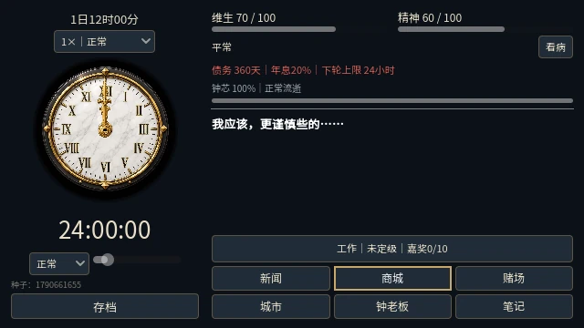
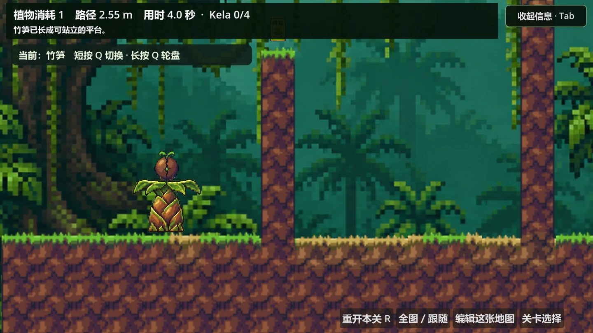
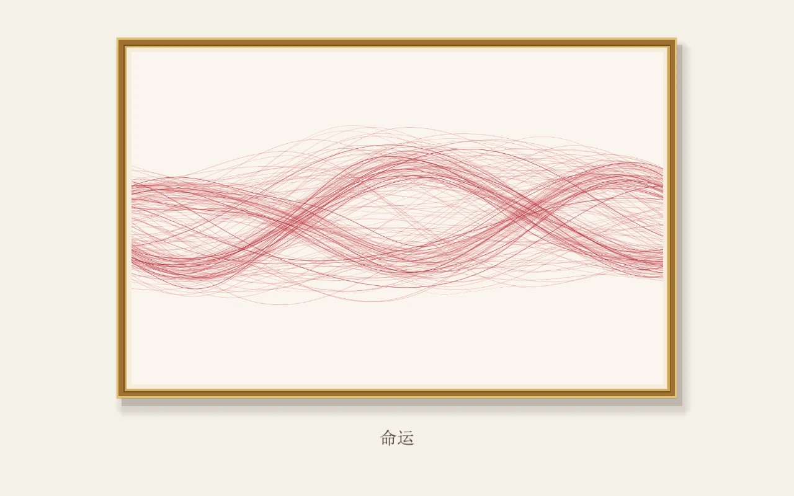
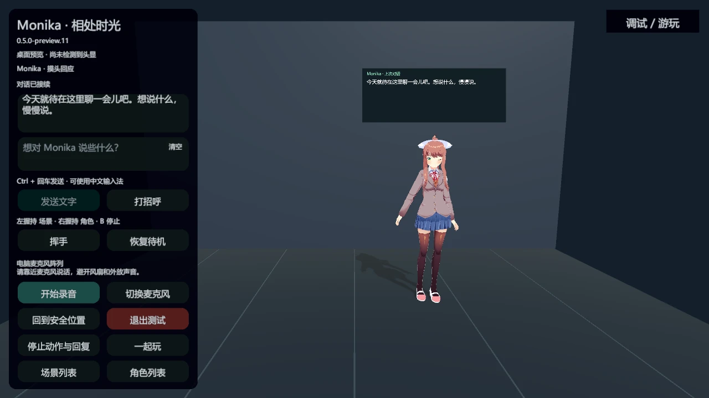

个人项目｜创意、系统与数值设计、AI 协作制作
Time Decay · 时陨
以时间作为寿命、货币与债务的叙事经营游戏，玩家在工作、交易和轮回中分配有限的个人时间。
交付 Windows 可玩版本与浏览器试玩入口，整理项目作品集和数值实验记录。
 ROLAND施浩然 · PORTFOLIO
ROLAND施浩然 · PORTFOLIOROLAND / PROJECT COLLECTION
游戏制作、AI 应用、VR 交互、写作与案例分析、金融自动化、社群与销售。每个项目记录我做了什么，以及留下了什么成果。

个人项目｜创意、系统与数值设计、AI 协作制作
以时间作为寿命、货币与债务的叙事经营游戏，玩家在工作、交易和轮回中分配有限的个人时间。
交付 Windows 可玩版本与浏览器试玩入口，整理项目作品集和数值实验记录。

制作人、主策划、核心开发｜团队项目
5 人团队在 48 小时 Game Jam 中制作的横版解谜游戏，以种植植物改变通行路线，提供地图编辑器与本地多人玩法。
获得 GGJ 大赛通关奖。

个人项目｜主题、交互规则与 AI 协作制作
以命运三女神和福尔图纳为灵感的艺术交互游戏，用 80 秒人生与丝线的相遇、缠绕和断裂表达人与关系。
完成含人生推进、关系交互、回看结尾与参数编辑器的可玩原型。
个人项目｜产品设计、Agent 设计与 AI 协作实现
面向长篇作者的写作工具，提供拆书、素材检索、局部改稿与版本保存，让作者按具体片段选择参考和采纳修改。
交付 Windows 桌面版，形成从 Axure 原型到 Codex 实现的产品制作流程。
二次开发与本地集成
在已有 MAICA 与 Ren’Py 环境中接入和调整大语言模型对话，处理角色记忆、消息状态和连续会话体验。
完成角色对话的本地集成和兼容改造，整理公开补丁与运行说明。

个人项目｜需求、交互设计与 AI 协作集成
Unity 桌面与 PCVR 角色交互原型，将 AI 对话、语音和触碰动作接入同一场景，探索虚拟角色的空间交互。
完成桌面 / PCVR 可运行预览构建与统一启动入口。
创作需求、稿件评审与工作流设计
将小说创意、长篇修订与 AI 协作结合，围绕原稿事实、人物声音和对白保真组织写作、审校与版本交付。
保留小说设定、大纲、阅读稿和修订候选，以及对应来源和改动记录。
独立体验、分析与文档制作
以实际游玩和规则实验分析游戏体验，将玩法、养成、资源生产与数值取舍整理为可阅读的案例集合。
形成 23 页游戏策划分析案例集，以及数值策划案例集和配套表格。
社群管理、活动组织与转化交付
在 VRChat 公开房间进行引流和宣传，组织社群活动、展示模型，并开展产品转化与交付。
完成从公开房间宣传、社群活动到模型展示、产品转化与交付的实践。